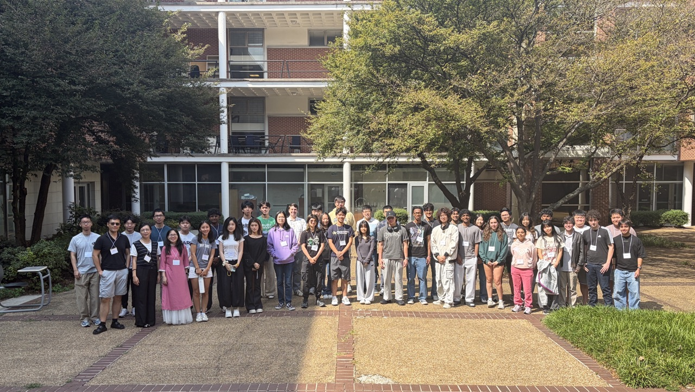
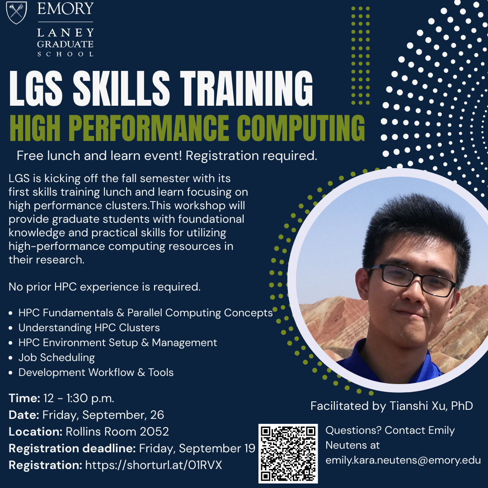
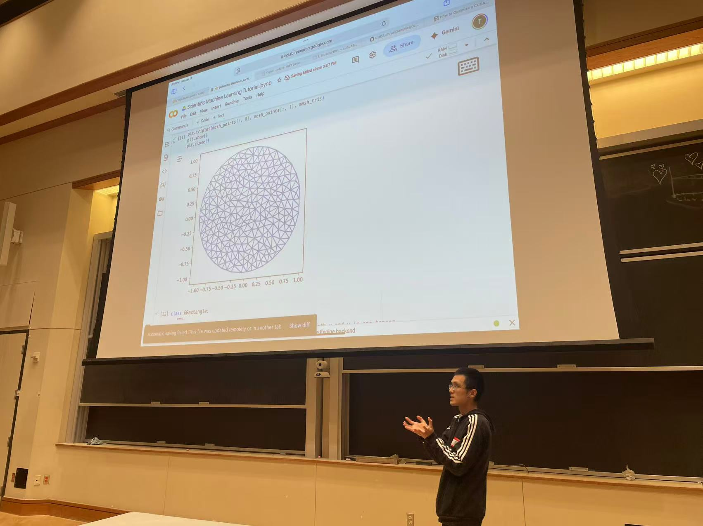
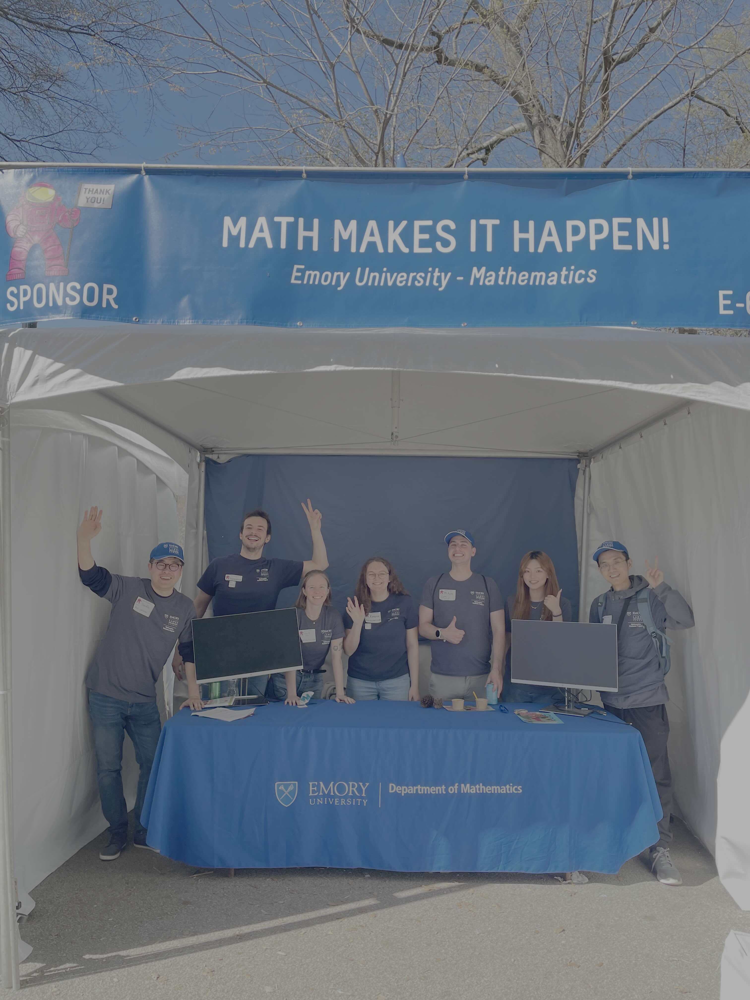
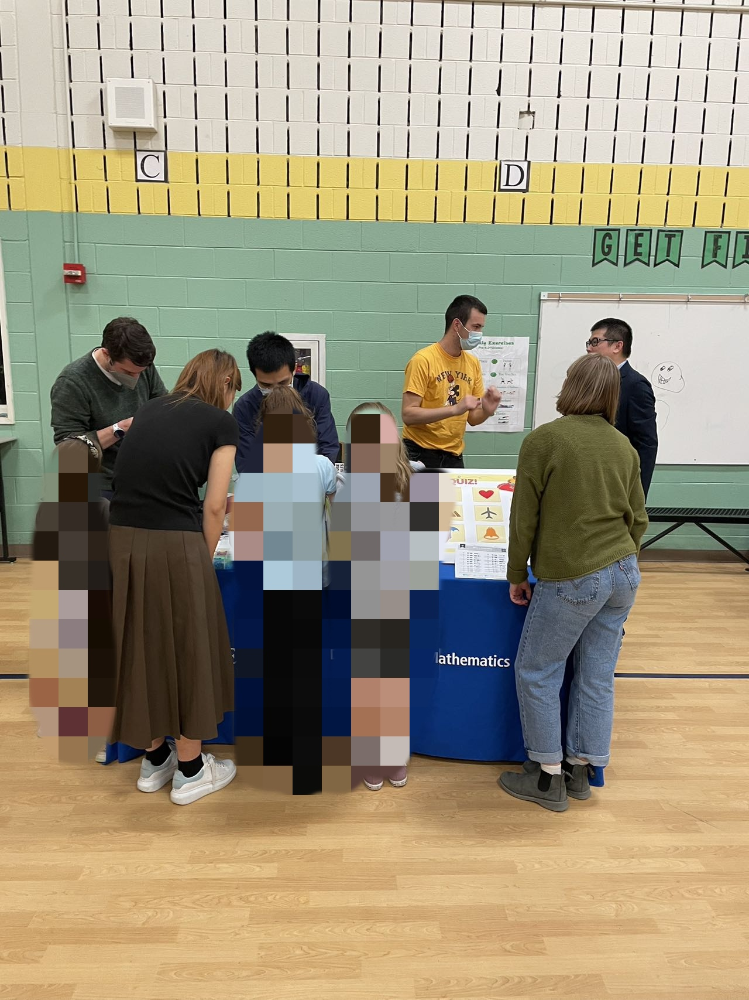

Co-Organizer · 2026
2nd Atlanta Mathematics of Data Science Bootcamp
Co-organizer of the 2nd Atlanta Mathematics of Data Science Bootcamp, a free two-day program for undergraduate and high school students at Georgia Tech (2026).

Co-Organizer · 2026
Co-organizer of the 2nd Atlanta Mathematics of Data Science Bootcamp, a free two-day program for undergraduate and high school students at Georgia Tech (2026).

Instructor · 2025
Instructor for the Emory LGS Skills Training on HPC (2025).

Co-Organizer · 2025
Co-organizer of the Atlanta Mathematics of Data Science Bootcamp (2025).

Exhibitor · 2025
Exhibitor at the Atlanta Science Festival (2025). We set up a booth to show the importance of math in science and engineering.

Exhibitor · 2023 · 2024
Exhibitor at the Mary Lin Elementary School’s STEAM Day (2023, 2024). We set up booths to show the importance of math in science and engineering.
